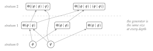

Chapter 18
Scopes, and the Fixed Points that Generate Them
The previous two chapters built a logic: a language of formulae generated from the calculus rather than imposed on it, whose sentences denote equivalence classes of behaviour. This chapter puts that language to a use it has not yet been put to. A name predicate does not only describe a name; it carves out a region — and a region is what everything later in this book will need when it wants to say where something is, how many of something there are, or what a learner owns. The machinery is short. What it buys is that a region can be finitely described and unboundedly large at the same time, which is the condition every interesting application turns out to be in.
18.1 Regions, and why a list will not do
In the rho calculus a channel is a name \(\quo{P}\), and a name is a piece of code at which something may reside. Location is therefore already a computational notion here, in a way it is not in most formalisms: to say where a process is, is to exhibit a program.
That makes the obvious definition of a region available at once. A region is a finite set of channels, \(\{c_1, \dots, c_k\}\), and anything one wants to say about “here” is said by quantifying over that set. Counting is counting members; ownership is membership; a boundary is the difference between two such sets.
The definition works and it is too weak, for a reason that has nothing to do with cardinality and everything to do with description. A finite set must be given by listing it, and almost no region worth naming can be listed. Consider three that this book will need:
\itemsep2pt
the channels belonging to a particular learner;
the channels of any learner rooted at a given quotation;
the channels of an organism, and of its organs, and of their cells, and so on down.
The first is finite but not known in advance; it is what a learner is trying to establish about itself. The second is not finite. The third is not finite and is not even flat — it has levels, and the levels are the point.
A learner can only work with a region it can state, because everything a learner traffics in is a formula and everything it does with a formula is priced by that formula’s structure. So the region wants to be a formula too.
18.2 Scope as a predicate
A scope is a name predicate \(\Nsp\). Its extension is \[\Ext(\Nsp) \;=\; \{\, n \;:\; n \models \Nsp \,\},\] a collection of channels, possibly infinite. We write \(\quo{\phi}\) for the scope satisfied by \(\quo{P}\) exactly when \(P \models \phi\), and read it “names of \(\phi\)-things”.
Nothing here is new machinery: \(\quo{\phi}\) is the name predicate of the namespace logic [39], and the only move being made is to take its extension seriously as a place.
A finite set of channels \(\{c_1,\dots,c_k\}\) is the scope \(\quo{\phi_1} \lor \dots \lor \quo{\phi_k}\), where \(\phi_i\) is a characteristic formula for \(\drop{c_i}\). So nothing is given up in the move to predicates. What is gained is that a scope may now be finitely described and unboundedly large, and that a scope is the same kind of object as a hypothesis — which means the same economics applies to both.
We will use namespace for the object and scope for the role it plays when something is being located or counted in it. The two words name the same thing seen from two sides, and both are already in use in this book: the namespaces of \(\chComp\) are scopes in exactly this sense.
18.3 Disjointness is structure
A composite region ought to be harder to work in than its parts. It is not, provided the parts are disjoint, and the reason is a small proposition about parsing.
Let \(\quo{\phi}\) and \(\quo{\psi}\) be scopes with \(\Ext(\quo{\phi}) \cap \Ext(\quo{\psi}) = \emptyset\), separated at grade \(0\) in the sense of §23.5. Then every \(n \in \Ext(\quo{(\phi \mid \psi)})\) decomposes uniquely: there are \(P, Q\) with \(n = \quo{(P \mid Q)}\), \(P \models \phi\), \(Q \models \psi\), and \(P,Q\) are determined up to structural congruence.
Existence is the reading of \(\mid\) at formula level. For uniqueness, suppose \(n = \quo{(P \mid Q)} = \quo{(P' \mid Q')}\) with \(P, P' \models \phi\) and \(Q, Q' \models \psi\). Quotation is injective, so \(P \mid Q \equiv P' \mid Q'\). Grade-\(0\) separation says there is no spanning redex between the parands, so by Theorem 23.1 the free names of the \(\phi\)-part and the \(\psi\)-part are disjoint. A structural congruence between two parallel compositions whose parands have disjoint free names can only permute parands within each side; hence \(P \equiv P'\) and \(Q \equiv Q'\).
Under the hypotheses of Proposition 18.1, the description length of the composite scope is the sum of those of its parts up to a constant, and membership testing decomposes: a name is tested by splitting it once and testing each part against its own predicate.
If the scopes overlap, the split is not unique, and a membership test must search over splittings rather than perform one. The description of the composite then fails to decompose, and the excess is exactly the defect of the lax comparison map of \(\chComp\): the interaction between two learners and the ambiguity in parsing their joint namespace are one quantity, seen once dynamically and once syntactically. This is the third appearance of that pattern, after \(\chComp\)’s \(\lambda\) and \(\chEng\)’s \(\theta\), and its recurrence is worth noticing — in each case something that looks like a failure of composition to be clean turns out to be the measure of what composition achieved.
So disjointness is not an obstacle that composition works around. It is the certificate that makes a composite scope structured, and structure is what makes a large scope cheaper to work in than a small unstructured one. This is the opposite of the usual intuition about modularity, where separation is a discipline one pays for; here separation is what one is buying.
18.4 Fractality by fixed point
Disjoint composition gives wider scopes. It does not by itself give deeper ones — scopes whose members are themselves composites of members, all the way down. For that we want a fixed point, and the logic has the apparatus already [119].
Let \(\phi, \psi\) be formulae and \(X\) a scope variable. The generated scope \[\Nsp \;=\; \mu X.\, \quo{\bigl( (\phi \lor X) \mid (\psi \lor X) \bigr)}\] is the least scope with \(\Ext(\Nsp) = \Ext\bigl(\quo{((\phi \lor \Nsp) \mid (\psi \lor \Nsp))}\bigr)\), where a scope variable in a process position is read as “the drop of a name in \(\Ext(X)\)”.
More elaborate generators are available and will be wanted — one predicate per skill rather than two, guarded recursion under several variables, gradings carried through the unfolding — and §53.4.5 uses the four-predicate version. This one is enough to make the points.
The stratum \(\str(n)\) of a name \(n \in \Ext(\Nsp)\) is the number of unfoldings of \(\mu X\) needed to derive \(n \models \Nsp\). Atoms — names of \(\phi\)-things and \(\psi\)-things that are not themselves composites — have stratum \(0\).

| stratum \(\le j\) | names | new at this stratum |
|---|---|---|
| \(0\) | \(2\) | \(2\) |
| \(1\) | \(5\) | \(3\) |
| \(2\) | \(17\) | \(12\) |
| \(3\) | \(155\) | \(138\) |
| \(4\) | \(12{,}092\) | \(11{,}937\) |
| \(5\) | \(73{,}114{,}280\) | \(73{,}102{,}188\) |
The extension grows doubly exponentially while the generator does not grow at all. That gap is the whole point of the construction, and §18.5 names the quantities on either side of it. First, though, the property that makes generated scopes usable rather than merely compact.
Let \(\Nsp\) be a generated scope whose atomic predicates have decidable satisfaction. Then for any name \(n\), the question \(n \models \Nsp\) is decidable.
Test \(n\) by unfolding: \(n \models \Nsp\) iff \(\drop{n}\) satisfies one of the atoms, or \(n = \quo{(P \mid Q)}\) with \(\quo{P}\) and \(\quo{Q}\) each satisfying \(\Nsp\). By Proposition 18.1 the split is unique, so no search is required. The recursive calls are on \(\quo{P}\) and \(\quo{Q}\), and by the no-self-code theorem [40] a name codes a strictly smaller term, so \(|P|, |Q| < |P \mid Q|\). The recursion is therefore well-founded on term size and terminates, with depth bounded by \(\str(n)\).
Two hypotheses carry this and neither is decoration. Disjointness makes the split unique, so the descent is deterministic rather than a search; without it the procedure branches over splittings and its cost is no longer governed by term size. No-self-code makes the descent well-founded, and that is a property of reflection specifically — it is what prevents a name from being a member of a scope by way of itself. So the computability here is not bought by restricting to finite regions. It is bought by the calculus being reflective, which is the same purchase that §24.5.4 makes when it builds the tower of media and §21.12.2 makes when it puts the germ on a channel.
Definition 18.2 takes the least fixed point, and the choice is not innocent. The greatest fixed point admits non-well-founded scopes — names whose membership is witnessed only by an infinite descent — and Proposition 18.2 does not cover them, since the argument from no-self-code bounds the descent by term size and a non-well-founded witness has no such bound.
We take the view that this framework only ever wants \(\mu\), and that the reason is economic rather than conventional. A scope a learner can survey is one whose membership test terminates; a test that does not terminate is a cost with no receipt, and by §21.4 an assay that cannot be settled within budget is refuted rather than pending. A \(\nu\)-scope is therefore a region nothing budgeted can knowingly inhabit. That is a substantive claim about what kinds of places there are for a mind to be, and we would rather state it than assume it; the alternative is recorded as an open question, since a non-well-founded scope is exactly what one would reach for to model an ecology with no bottom.
18.5 Generator length
The generator length \(\gen(\Nsp)\) of a generated scope is the number of symbols in the \(\mu\)-formula defining it, with atomic predicates counted by their own lengths.
Table 18.1 is the observation that \(\gen\) and \(|\Ext(\Nsp)|\) are not the same kind of quantity and do not move together. Chapter 53 adds a third, the number of joining steps it takes to build an inhabitant of the scope, and shows that the three stand in a chain. We flag the destination here because the temptation, on meeting a compact description of an enormous structure, is to conclude that the structure is cheap. It is not. The description is cheap.
18.6 What this is for
Three uses, each in a later part, and each is a place where the book has so far been managing with the extensional notion and straining.
Ownership. \(\chEng\) defines an individual as a region whose internal media are closed and whose boundary media are not, and observes that the definition is a fixed-point condition rather than a construction. With Definition 18.2 the circularity has a shape: what is being solved for is a generator, and the levels of the resulting hierarchy are its strata.
Counting. Chapter 48 counts copies of a process in a namespace. That count needs a region, and Remark 18.1 is why the region cannot in general be a list. Chapter 53 takes this up in earnest.
Knowing. A learner’s reach is bounded by what it can afford to visit, and §24.8 prices visiting. A scope is therefore not only a description but a budget line, and the region that exists for a given learner is the part of the extension it can pay to survey. The Prestige returns to this in §68.5.1, where the distinction between what can be characterised and what can be afforded turns out to be doing metaphysical work.